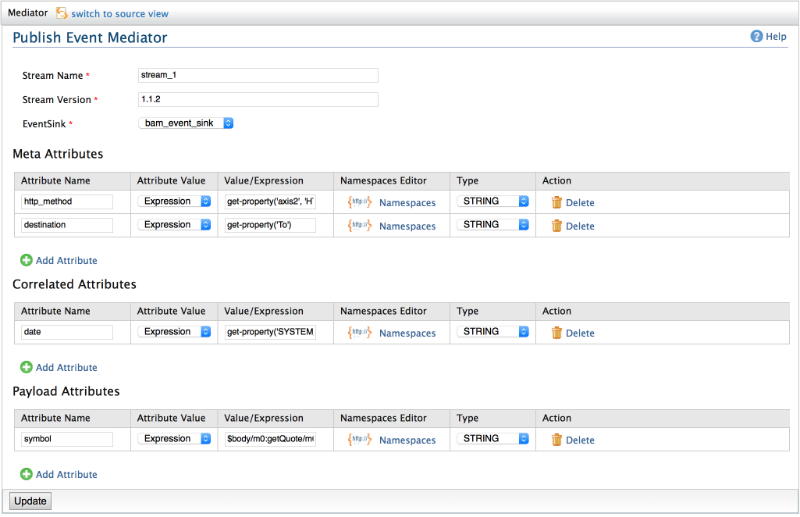

Publish Event Mediator
publishEvent mediator can be used to construct an event and publish the event to a different system such as BAM or CEP.
An event consists of three separate sections of data attributes, namely meta, correlation and payload.
Event can be constructed with desired data attributes. Values for data attributes can be extracted from message and message context. XPaths and XPath extension function get-property() can be used for extracting data from message and message context.

Figure1: publishEvent Mediator
Configuring publishEvent mediator
- Stream Name: Name of the stream to be used for sending data.
- Stream Version: Version of the stream to be used for sending data.
- Event Sink: Name of the event sink to which events should be published. To manage event sinks, go to Configure -> Event Sinks.
- Meta Attributes: List of attributes which goes in meta section of event.
- Correlation Attributes: List of attributes which goes in correlation section of event.
- Payload Attributes: List of attributes which goes in payload section of event.
Adding attributes
You can add new attributes to meta, correlation and payload sections using the "Add Attribute" button in each section. Attribute configuration is similar to the configuration of property mediator.
- Attribute Name: Name of the stream attribute.
- Attribute Value: Specifies whether value is an expression or a constant.
- Value/Expression: If "Expression" is selected for Attribute Value, an XPath expression should be specified. get-property() XPath extension function is supported in expressions. If "Value" is selected for Attribute Value, plain text value should be entered.
- Namespace Editor: Namespaces used in the XPath expression should be specified in Namespace Editor.
- Type: Data type of the attribute.
Note: If a new attribute is added, existing attribute is deleted or a change to any attribute is made (Value/Expression changes are not considered), either Stream Name or Stream Version should also be changed